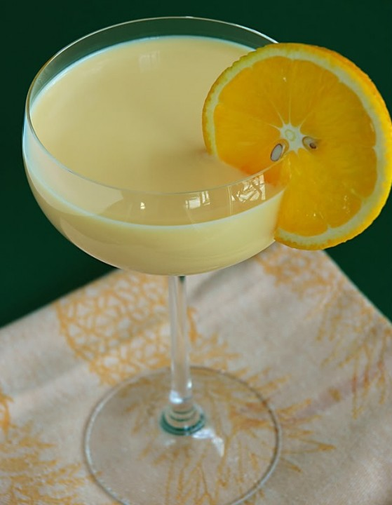

BATIDOS
Batido De Naranja

Espectativa
Ingredientes:
- 5 naranjas
- 500 ml leche
- 2 tazas de Leche en polvo
- 50 cc nata líquida
- 6 hojas hierbabuena
- 150 de hielo picado
- 300 g azúcar morena
Pasos:
- Primero picamos el hielo poniendo los cubitos de hielo bajo un paño y lo aporreamos hasta que quede en trocitos más pequeños, así evitaremos trabajar en exceso a nuestro robot de cocina en los pasos siguientes.
- Seguidamente pelamos 4 de las naranjas y les quitamos la parte blanca. Cortamos las naranjas y las ponemos en el vaso de la batidora, agregamos la hierba buena, la leche, la nata líquida, el azúcar moreno y el hielo picado préviamente.
- Batimos todo el conjunto hasta que quede una crema fina y no haya resto de hielo.
- Probamos el batido y añadimos azúcar si lo queremos más dulce.
- Servimos al momento en copas individuales decoramos con una rodajita completa de la naranaja que habíamos reservado.


Este es un sitio de recetas rápidas que puedes hacer facilmente para una reunión, sorpresa, algo casual o simplemente para ti.